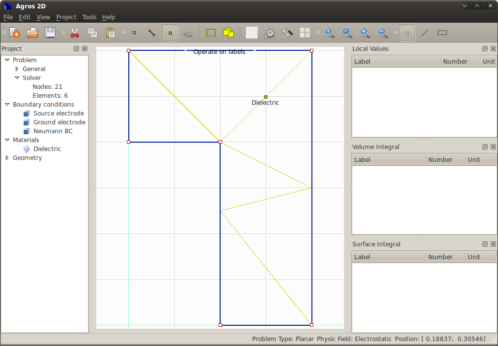
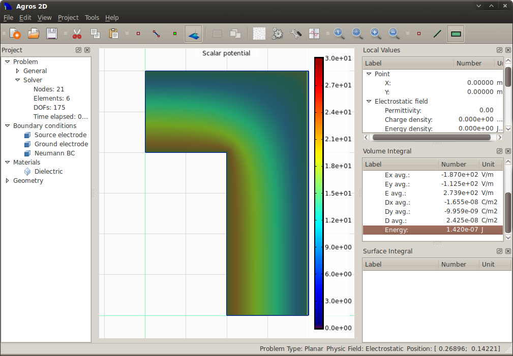

Geometry of the model
Capacitor is a passive electrical component. It used to store electric charge. It consists of electrodes that are separated between dieletric and have a different electrical potential.
For more information about capacitors visit http://en.wikipedia.org/wiki/Capacitor.
Select "New" in the menu "File", or in main toolbar and enter project properties.
Select "Operate on nodes" in the "Project" menu, or in main toolbar and place 6 points with coordinates [0.1, 0.0], [0.2, 0.0], [0.0, 0.2], [0.0, 0.3], [0.1, 0.2] and [0.2, 0.3]. You can move mouse to requested place and press left button together with control key, or by pressing <Alt>+N and entering the point coordinates.
Select "Operate on edges" in the "Project" menu, or in main toolbar and draw 6 edges according to definition area. Press <Control> key and select in sequence start and end node of the line, or by pressing <Alt>+E and these point select from offer.
Select "Operate on labels" in menu "Project", or in main toolbar and place block label into inner area. To place label you can use left mouse button together with control key or pressing <Alt>+L and entering the label point coordinates.
Geometry of the model
Select "New boundery condition" from the menu "Project", or press <Alt>+B and gradually define three BC, which are described in chapter Model analysis.
Select "New material" from the menu "Project", or press <Alt>+M and define dieletric material embedded between the electrodes.
Select "Mesh area" from the menu "Tools", or main toolbar.

Mesh of the model
Select "Solve problem" from the menu "Tools", or main toolbar.
Select "Volume integrals" from the main toolbar and mark area "Dieletric". In subwindow "Volume integral" find value of "Energy" in group "Electostatic field".
Capacity of capacitor may be calculated according to formula We = 4 × 1/2 × CU2, which can be adjusted to shape C = 4 × 2 × We/U2

Distribution of electric field potential of model